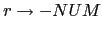
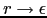

{ $r{H} = $NUM{VAL} } 
{ $expr{T} = $r{T} }

{ $r_1{H} = $r{H}." ".$NUM{VAL}." - " } 
{ $r{T} = $r_1{T} }

{ $r{T} = $r{H} }
es posible construir un APDR que ejecuta las acciones semánticas en los puntos indicados por el esquema de traducción. El atributo heredado se convierte en un parámetro de entrada a la subrutina asociada con la variable sintáctica:
sub expression() {
my $r = $value." "; #accion intermedia
match('NUM');
return rest($r); # accion final $expr{T} = $r{T}
}
sub rest($) {
my $v = shift;
if ($lookahead eq '-') {
match('-');
my $r = "$v $value -"; # accion intermedia
match('NUM');
return rest($r); # accion final $r{t} = $r_1{t}
}
elsif ($lookahead ne 'EOI') {
error("Se esperaba un operador");
}
else { return $v; } # r -> epsilon { $r{t} = $r{h} }
}